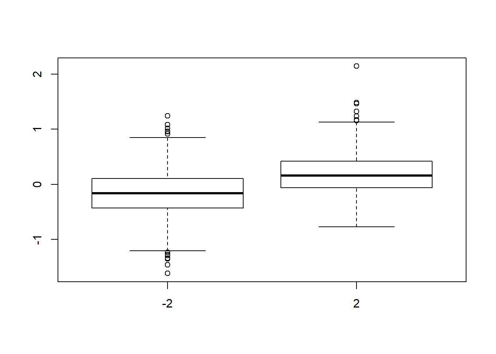
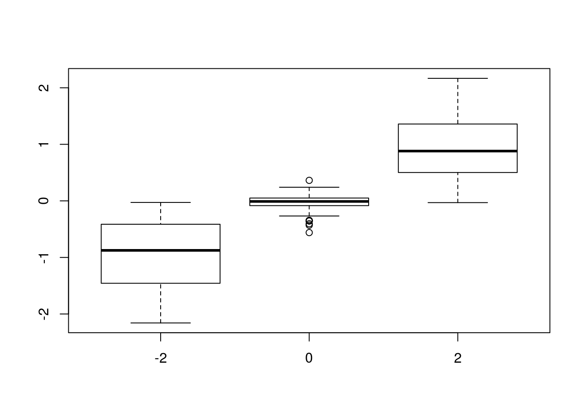

Analyze Alpha = 1
David Gerard
2017-06-15
=======Investigate t
David Gerard
2017-06-16
>>>>>>> c0b024cc53744af102f68ca18c895901e4e2f99fAbstract
<<<<<<< HEADSee if I can recapitulate Joyce’s Results
Analysis
library(sva)## Loading required package: mgcv## Loading required package: nlmeI try to make sense of Joyce’s results.
Read in Data
Dataset 61 is the problem dataset:
library(tidyverse)## Loading tidyverse: ggplot2
## Loading tidyverse: tibble
## Loading tidyverse: tidyr
## Loading tidyverse: readr
## Loading tidyverse: purrr
## Loading tidyverse: dplyr## Conflicts with tidy packages ----------------------------------------------## filter(): dplyr, stats
## lag(): dplyr, statslibrary(sva)## Loading required package: mgcv## Loading required package: nlme##
## Attaching package: 'nlme'## The following object is masked from 'package:dplyr':
##
## collapse## This is mgcv 1.8-17. For overview type 'help("mgcv-package")'.## Loading required package: genefilter##
## Attaching package: 'genefilter'## The following object is masked from 'package:base':
##
## anyNAlibrary(vicar)
library(pROC)## The following object is masked from 'package:readr':
##
## speclibrary(vicar)
load("../data/counts-allgenes-bimodal.rda")
index <- 61
Y <- log2(counts_allgenes_bimodal[[index]]$counts + 1)
bad_y <- apply(Y, 1, sd) == 0
Y <- Y[!bad_y, ]
X <- model.matrix(~as.factor(counts_allgenes_bimodal[[index]]$condition))
colnames(X)[2] <- "Treatment"
beta <- counts_allgenes_bimodal[[index]]$beta[!bad_y]
which_null <- counts_allgenes_bimodal[[index]]$null[!bad_y]Hypothesis
The distribution of the true coefficients Joyce’s dataset where MOUTHWASH performs very poorly has only 2 null genes out of 996 total genes. So it seems that MOUTHWASH works worse when the assumptions of unimodality about 0 are very unsatisfied!
ggplot(data = data_frame(beta = beta), mapping = aes(x = beta)) +
geom_histogram() +
theme_bw()## `stat_bin()` using `bins = 30`. Pick better value with `binwidth`.Notice that the distribution of the \(\beta\)’s is approximately
\[ \beta = \begin{cases} 2 & \text{ w.p. } 1/2\\ -2 & \text{ w.p. } 1/2 \end{cases} \]
If \(\beta\) were actually either 2 or -2, then we could represent this as a low-rank factor \[ \beta = AB \] where \(A \in \mathbb{R}^{p \times 2}\) contains indicator columns for \(\beta_i\) being either -2 or 2 and \(B = (-2, 2)^T\).
What I am proposing is that there is an identifiability issue in the bimodal case! Perhaps the \(z\alpha\) term is absorbing the signal.
Make the proposed low-rank term.
temp_beta <- round(beta)
temp_beta[beta == 0] <- -2
temp_beta <- as.factor(temp_beta)
A <- model.matrix(~temp_beta)
A[, 1] <- A[, 1] - A[, 2]
colnames(A) <- c("V1", "V2")
B <- matrix(c(-2, 2), ncol = 1)
stopifnot(sum(A %*% B - round(beta)) <= 2)Fit MOUTHWASH
num_sv <- sva::num.sv(dat = Y, mod = X)
mout <- mouthwash(Y = t(Y), X = X, k = num_sv, scale_var = FALSE,
cov_of_interest = 2, include_intercept = FALSE)## Due to absence of package REBayes, switching to EM algorithmnames(mout)## [1] "fitted_g" "loglik" "logLR" "data" "result" "pi0"
## [7] "z2" "xi" "Zhat" "alphahat" "sig_diag"R_x <- qr.R(qr(X))
alpha_tilde <- mout$alphahat / c(R_x[2, 2])
z2 <- mout$z2
alpha_z <- c(z2 %*% alpha_tilde)\(\alpha z\) is indeed associated with the true \(\beta\)’s
boxplot(alpha_z ~ temp_beta)
Can we do canonical correlation to see how perfectly we can recapitulate the \(A\) matrix from above using the alpha_tilde matrix above?
ccout <- cancor(A, t(alpha_tilde), xcenter = FALSE, ycenter = FALSE)The maximum correlations we observe between these two matrices is ccout$cor.
Recapitulate results
new_A <- A %*% ccout$xcoef
new_alpha_tilde <- t(alpha_tilde) %*% ccout$ycoef
tot_mat <- cbind(new_A, new_alpha_tilde[, 1:2])
vmat <- crossprod(tot_mat)
cor_vec <- diag(cov2cor(vmat)[1:2, 3:4])
cor_vec## [1] 0.7632 0.4138ccout$cor## [1] 0.7632 0.4138It looks even stronger.
boxplot(new_alpha_tilde[, 1] ~ new_A[, 1])boxplot(new_alpha_tilde[, 2] ~ new_A[, 2])If we use this new alpha_tilde matrix with the first two columns subtracted, how does inference change?
S_diag <- mout$sig_diag / c(R_x[2, 2] ^ 2)
betahat <- limma::lmFit(Y, X)$coefficients[, 2]
ash_out <- ashr::ash(betahat = betahat, sebetahat = sqrt(S_diag),
mixcompdist = "normal")## Due to absence of package REBayes, switching to EM algorithmmout2 <- mouthwash_second_step(betahat_ols = betahat, S_diag = S_diag,
alpha_tilde = new_alpha_tilde[, -c(1:2)],
scale_var = FALSE, tau2_seq = ash_out$fitted_g$sd^2,
lambda_seq = c(10, rep(1, length = length(ash_out$fitted_g$sd) - 1)))## Due to absence of package REBayes, switching to EM algorithmRun SVA for comparison
svout <- sva::sva(dat = Y, mod = X)## Number of significant surrogate variables is: 19
## Iteration (out of 5 ):1 2 3 4 5Xsv <- cbind(X, svout$sv)
limmaout <- limma::lmFit(object = Y, design = Xsv)
ebayesout <- limma::ebayes(limmaout)
svp <- ebayesout$p.value[, 2]library(pROC)## Type 'citation("pROC")' for a citation.##
## Attaching package: 'pROC'## The following objects are masked from 'package:stats':
##
## cov, smooth, varload("../data/counts-allgenes-bimodal.rda")
ls()## [1] "counts_allgenes_bimodal" "q"index <- 8
Y <- log2(counts_allgenes_bimodal[[index]]$counts + 1)
mean_counts <- rowSums(Y)
which_bad <- mean_counts < 10
Y <- Y[!which_bad, ]
X <- model.matrix(~as.factor(counts_allgenes_bimodal[[index]]$condition))
beta <- counts_allgenes_bimodal[[index]]$beta[!which_bad]
which_null <- counts_allgenes_bimodal[[index]]$null[!which_bad]
colnames(X) <- c("Intercept", "Treatment")
head(X)## Intercept Treatment
## 1 1 0
## 2 1 0
## 3 1 0
## 4 1 0
## 5 1 0
## 6 1 0num_sv <- sva::num.sv(dat = Y, mod = X)
num_sv## [1] 14sva_out <- sva::sva(dat = Y, mod = X, n.sv = num_sv)## Number of significant surrogate variables is: 14
## Iteration (out of 5 ):1 2 3 4 5X.sv <- cbind(X, sva_out$sv)
limma_out <- limma::lmFit(object = Y, design = X.sv)
ebayes_out <- limma::ebayes(limma_out)
lmout <- lm(t(Y) ~ X.sv)
pvals <- sapply(summary(lmout), FUN = function(x){x$coefficients[2, 4]})
aout <- ashr::ash.workhorse(betahat = limma_out$coefficients[, 2], sebetahat = sqrt(ebayes_out$s2.post) * limma_out$stdev.unscaled[, 2], mixcompdist = "normal")
mout <- mouthwash(Y = t(Y), X = X, k = num_sv, cov_of_interest = 2, include_intercept = FALSE, scale_var = FALSE, likelihood = "normal", mixing_dist = "normal")
mout$loglik## [1] -1188mout$pi0## [1] 0.1397mean(which_null)## [1] 0.2157all((counts_allgenes_bimodal[[index]]$beta == 0) == counts_allgenes_bimodal[[index]]$null)## [1] TRUEauc(response = which_null, predictor = mout$result$lfdr)## Area under the curve: 0.915auc(response = which_null, predictor = aout$result$lfdr)## Area under the curve: 0.975auc(response = which_null, predictor = ebayes_out$p.value[, 2])## Area under the curve: 0.983auc(response = which_null, predictor = pvals)## Area under the curve: 0.984boxplot(limma_out$coefficients[, 2] ~ round(beta))
boxplot(mout$result$PosteriorMean ~ round(beta))mout$pi0## [1] 0.1397mean(which_null)## [1] 0.2157samp <- vicar::rmixnorm(n = 10000, pi_vals = mout$fitted_g$pi, sd_seq = mout$fitted_g$sd, mean_seq = mout$fitted_g$mean)
samp_ash <- vicar::rmixnorm(n = 10000, pi_vals = aout$fitted_g$pi, sd_seq = aout$fitted_g$sd, mean_seq = aout$fitted_g$mean)
plot(density(samp_ash))
plot(density(samp))plot(density(beta))summary(mout$result$lfdr)## Min. 1st Qu. Median Mean 3rd Qu. Max.
## 0.000 0.000 0.000 0.131 0.129 0.799summary(aout$result$lfdr)## Min. 1st Qu. Median Mean 3rd Qu. Max.
## 0.000 0.000 0.000 0.144 0.210 0.796plot(mout$result$lfdr, aout$result$lfdr)sessionInfo()## R version 3.3.2 (2016-10-31)
## Platform: x86_64-pc-linux-gnu (64-bit)
## Running under: Ubuntu 16.04.2 LTS
##
## locale:
## [1] LC_CTYPE=en_US.UTF-8 LC_NUMERIC=C
## [3] LC_TIME=en_US.UTF-8 LC_COLLATE=en_US.UTF-8
## [5] LC_MONETARY=en_US.UTF-8 LC_MESSAGES=en_US.UTF-8
## [7] LC_PAPER=en_US.UTF-8 LC_NAME=C
## [9] LC_ADDRESS=C LC_TELEPHONE=C
## [11] LC_MEASUREMENT=en_US.UTF-8 LC_IDENTIFICATION=C
=======
svroc <- roc(response = which_null, predictor = svp)
m1roc <- roc(response = which_null, predictor = mout$result$lfdr)
m2roc <- roc(response = which_null, predictor = mout2$result$lfdr)
svroc$auc
## Area under the curve: 0.991
m1roc$auc
## Area under the curve: 0.533
m2roc$auc
## Area under the curve: 0.706
It does a little better, but nowhere as good as SVA. Changing the alpha really changes the results though
pl <- qplot(mout$result$lfdr, mout2$result$lfdr)
print(pl)

pl <- qplot(mout$result$lfdr, svp)
print(pl)
pl <- qplot(mout2$result$lfdr, svp)
print(pl)
Discussion on AUC
Does AUC even make sense if there are only 2 null data points. Then it is a very noisy estimate. I got some improvement by subtracting off the part of the confounders associated with the signal, but it might just be for this dataset that SVA got lucky and mouthwash got unlucky.
order(svp, decreasing = TRUE)[beta == 0]## [1] 899 535order(mout$result$lfdr, decreasing = TRUE)[beta == 0]## [1] 515 163order(mout2$result$lfdr, decreasing = TRUE)[beta == 0]## [1] 665 211plot(svroc)plot(m1roc)plot(m2roc)S_diag[beta == 0]## ENSG00000149115 ENSG00000158457
## 0.02062 0.01475ebayesout$s2.post[beta == 0]## ENSG00000149115 ENSG00000158457
## 0.004231 0.004282sessionInfo()## R version 3.4.0 (2017-04-21)
## Platform: x86_64-w64-mingw32/x64 (64-bit)
## Running under: Windows 10 x64 (build 15063)
##
## Matrix products: default
##
## locale:
## [1] LC_COLLATE=English_United States.1252
## [2] LC_CTYPE=English_United States.1252
## [3] LC_MONETARY=English_United States.1252
## [4] LC_NUMERIC=C
## [5] LC_TIME=English_United States.1252
>>>>>>> c0b024cc53744af102f68ca18c895901e4e2f99f
##
## attached base packages:
## [1] stats graphics grDevices utils datasets methods base
##
## other attached packages:
<<<<<<< HEAD
## [1] pROC_1.9.1 vicar_0.1.6 sva_3.18.0 genefilter_1.52.1
## [5] mgcv_1.8-17 nlme_3.1-131
##
## loaded via a namespace (and not attached):
## [1] Rcpp_0.12.11 plyr_1.8.4 iterators_1.0.8
## [4] tools_3.3.2 digest_0.6.12 annotate_1.48.0
## [7] evaluate_0.10 RSQLite_1.1-2 memoise_1.0.0
## [10] lattice_0.20-34 foreach_1.4.3 Matrix_1.2-8
## [13] DBI_0.6 yaml_2.1.14 parallel_3.3.2
## [16] stringr_1.2.0 knitr_1.15.1 REBayes_0.73
## [19] S4Vectors_0.8.11 IRanges_2.4.8 stats4_3.3.2
## [22] rprojroot_1.2 grid_3.3.2 Biobase_2.30.0
## [25] AnnotationDbi_1.32.3 XML_3.98-1.8 survival_2.41-2
## [28] rmarkdown_1.3 limma_3.26.9 ashr_2.0.5
## [31] magrittr_1.5 MASS_7.3-45 codetools_0.2-15
## [34] backports_1.0.5 htmltools_0.3.5 BiocGenerics_0.16.1
## [37] splines_3.3.2 assertthat_0.2.0 xtable_1.8-2
## [40] stringi_1.1.2 Rmosek_7.1.3 pscl_1.4.9
## [43] doParallel_1.0.10 truncnorm_1.0-7 SQUAREM_2016.8-2This site was created with R Markdown